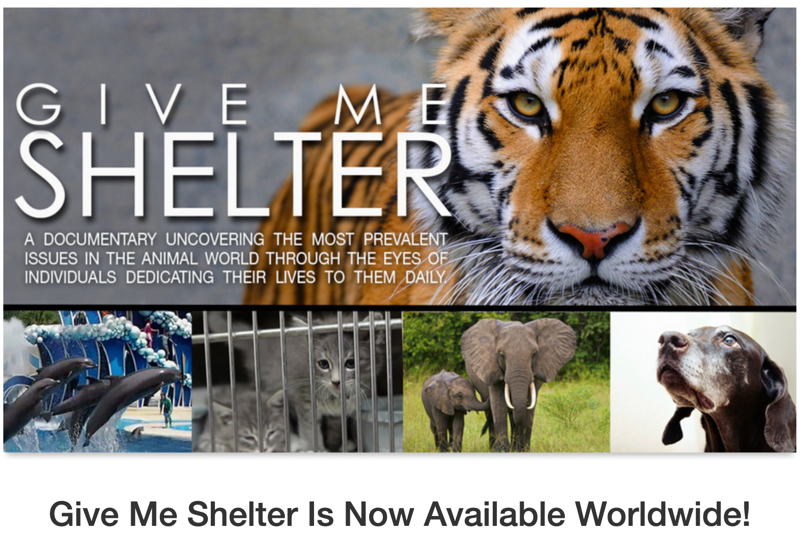

Species & Biodiversity Protection · Animal welfare
Give Me Shelter
Created and produced by Katie Cleary and directed by Kristin Rizzo, Give Me Shelter draws attention to animal exploitation and to the people who dedicate their lives to rescue, rehabilitation and care.

We are deeply grateful to the filmmakers and everyone whose work this documentary brings into view. It is remarkable work. Thank you for helping more people understand what animals face and recognise the commitment of those who protect them.
For the BHOC Species & Biodiversity Protection Initiative, this message is close to our own understanding. Kipling’s words, “We be of one blood, ye and I,” express a connection that should influence how we treat other living beings.
We believe that understanding the biology we share should strengthen our responsibility to care for them.
Different species. The same biological need: oxygen.